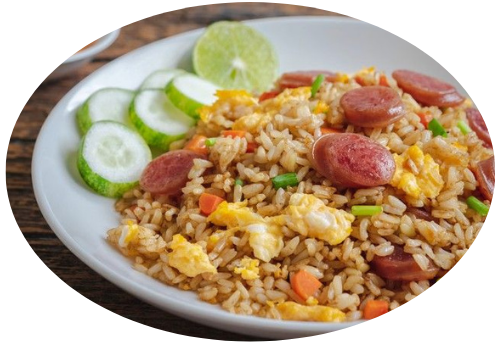
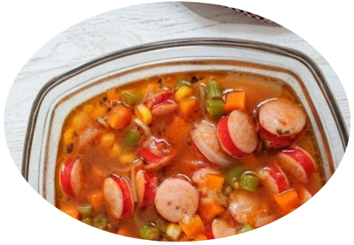
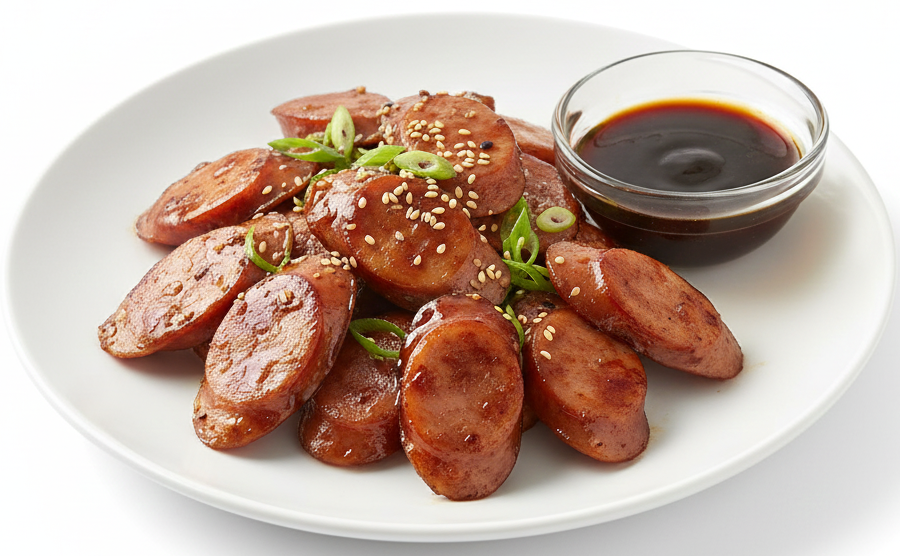
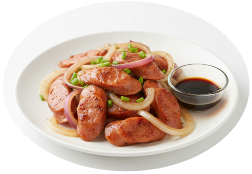

Olahan Sosis
Sosis Telur
gorengan gurih
♡

Nasi Goreng Sosis
nasi goreng gurih
♡
Hotdog
camilan gurih
♡

Sup Sosis
kuah hangat
♡
Sosis Gulung Roti Tawar
camilan gurih
♡

Sosis Saus Tiram
gurih lezat
♡
Sosis Bakar BBQ
bakar gurih
♡

Sosis Selimut Telur
sarapan gurih
♡
Sosis Gulung Mie
camilan gurih
♡

Sosis Tumis Bombai
tumis gurih
♡